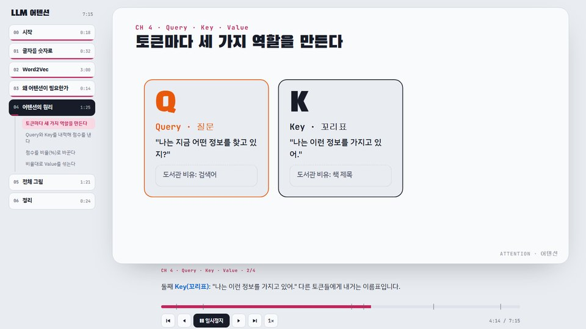

텍스트 수업 · 심화
단어들은 서로를 얼마나 쳐다볼까?
벡터와 내적으로 읽는 LLM의 핵심, 어텐션

▶ 모션그래픽 보기
Word2Vec부터 Query·Key·Value까지 · 7분 15초
체험하기
단어 벡터와 코사인 유사도 계산하기
텍스트 수업 · 심화
벡터와 내적으로 읽는 LLM의 핵심, 어텐션

Word2Vec부터 Query·Key·Value까지 · 7분 15초
단어 벡터와 코사인 유사도 계산하기